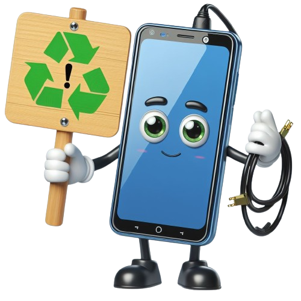
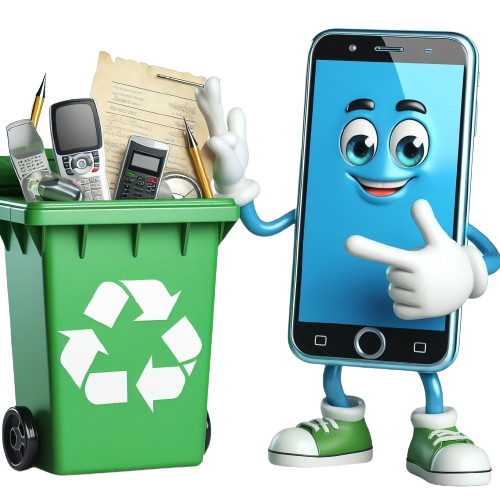
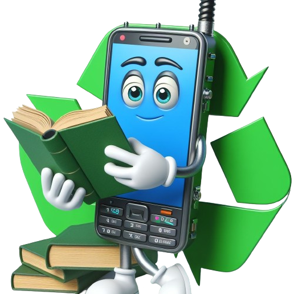

RISCOS
Os resíduos eletrônicos, são uma grande preocupação ambiental devido à constante evolução do mundo tecnológico. Os equipamentos elétricos e eletrônicos possuem diversos componentes tóxicos em suas estruturas. Se descartados de maneira incorreta, esses resíduos tóxicos podem contaminar o solo e os lençóis freáticos, colocando em risco a saúde pública. Além disso, a alta geração de resíduos de equipamentos eletroeletrônicos atrelada às baixas taxas de reciclagem a nível mundial demandam maior necessidade de extração de matérias-primas primárias e consequentes maiores níveis de emissões de gases de efeito estufa.
DESCARTE
O descarte adequado de resíduos eletrônicos envolve a entrega em pontos de coleta específicos ou empresas de reciclagem. Aqui estão algumas dicas para descartar corretamente diferentes tipos de produtos eletrônicos:
• Celulares e Computadores: Separe os produtos eletroeletrônicos de outros tipos de resíduos. Apague todos os dados contidos nos aparelhos, como fotos, vídeos, contatos, entre outros dados pessoais. Limpe, desligue e entregue inteiros os produtos que serão descartados3.
• Pilhas: Descarte-as soltas em qualquer ponto de coleta de pilhas ou eletrônicos4.

